Note
Go to the end to download the full example code.
Building a Model from Scratch¶
Building a model from scratch, one borehole reading at a time
The Basics tutorial builds a model from a ready-made CSV file. Here, there’s no file – just a conceptual 2D cross-section with three boreholes, read off an image one point at a time. This is a more realistic starting point for a lot of real projects, and it also surfaces gempy concepts that a clean CSV import skips over entirely: how much data is actually needed before a model can be computed at all, and how a handful of alternative geological hypotheses can all fit the same sparse observations.
import numpy as np
import matplotlib.pyplot as plt
import matplotlib.image as mpimg
import gempy as gp
import gempy_viewer as gpv
The cross-section¶
The model below is based on a conceptual cross-section with data from three boreholes in a line. Here it is, loaded as a plain image – for this example, the image’s pixel dimensions double as the real extent of the data:
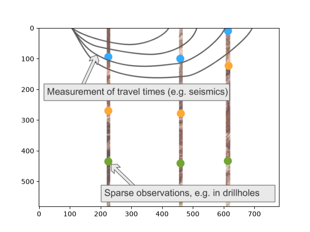
(582, 780)
Model setup¶
A model needs a name, an extent, and either a resolution or a refinement level (see
the Grids tutorial for what each of those actually controls) – and, since there’s no
CSV to import here, an explicitly initialized default structural frame instead of an
importer_helper.
The extent should align with the cross-section: X runs parallel to it, Z (depth) negative since we’re modeling the subsurface, and Y an arbitrary narrow band centered on 0 since the section carries no real Y information:
geo_model = gp.create_geomodel(
project_name='Model1',
extent=[0, 780, -200, 200, -582, 0],
resolution=(50, 50, 50),
structural_frame=gp.data.StructuralFrame.initialize_default_structure()
)
initialize_default_structure() gives the model one placeholder surface and the
ever-present basement unit, both in a single default structural group (see the
Basics tutorial for what these classes actually are):
[Element(
name=surface1,
color=#015482,
is_active=True
), Element(
name=basement,
color=#9f0052,
is_active=True
)]
Let’s rename and recolor that placeholder to a real lithology – say, the uppermost unit in the cross-section is a limestone, shown in blue:
geo_model.structural_frame.structural_elements[0].color = '#33ABFF'
geo_model.structural_frame.structural_elements[1].color = '#570987'
geo_model.structural_frame.structural_elements[0].name = 'Limestone'
geo_model.structural_frame.structural_groups[0].name = 'Deposit_Series'
Reading points off the cross-section¶
With the model set up, surface points can be added by simply reading their coordinates off the image. Overlaying the model’s own (currently empty) 2D plot on top of the cross-section, with a grid for reference, makes this easy:
p2d = gpv.plot_2d(geo_model, show=False)
p2d.axes[0].imshow(img, origin='upper', alpha=.8, extent=(0, 780, -582, 0))
p2d.axes[0].grid(which='both')
p2d.axes[0].minorticks_on()
p2d.axes[0].grid(which='major', linestyle='--', linewidth='0.8', color='gray')
p2d.axes[0].grid(which='minor', linestyle=':', linewidth='0.4', color='gray')
plt.show()
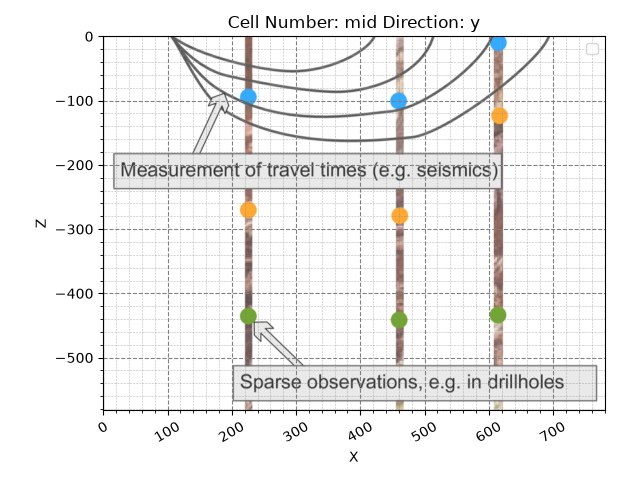
The first borehole’s limestone contact (the top boundary shown as a blue dot) reads at roughly X=225, 95 m deep. Since each surface in gempy marks the bottom of a unit, and we’re assuming no variation in Y, this becomes:
gp.add_surface_points(geo_model=geo_model, x=[225], y=[0], z=[-95], elements_names=['Limestone'])
p2d = gpv.plot_2d(geo_model, show=False)
p2d.axes[0].imshow(img, origin='upper', alpha=.8, extent=(0, 780, -582, 0))
p2d.axes[0].grid(which='both')
p2d.axes[0].minorticks_on()
p2d.axes[0].grid(which='major', linestyle='--', linewidth='0.8', color='gray')
p2d.axes[0].grid(which='minor', linestyle=':', linewidth='0.4', color='gray')
plt.show()
The point sits right on top of the borehole dot, as expected. The same call adds several points at once, so the other two boreholes’ limestone contacts can be added together:
gp.add_surface_points(geo_model=geo_model, x=[460, 617], y=[0, 0], z=[-100, -10], elements_names=['Limestone', 'Limestone'])
p2d = gpv.plot_2d(geo_model, show=False)
p2d.axes[0].imshow(img, origin='upper', alpha=.8, extent=(0, 780, -582, 0))
p2d.axes[0].grid(which='both')
p2d.axes[0].minorticks_on()
p2d.axes[0].grid(which='major', linestyle='--', linewidth='0.8', color='gray')
p2d.axes[0].grid(which='minor', linestyle=':', linewidth='0.4', color='gray')
plt.show()
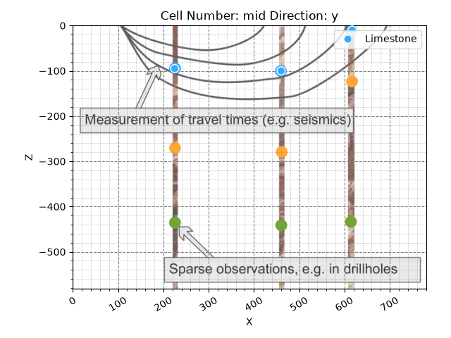
How much data is actually needed?¶
Three points down, but is that enough to compute a model yet? Not quite. gempy’s interpolation needs, at minimum:
Two surface points for at least one surface in a structural group
One orientation somewhere in that same group
Once one surface has two points and the group has an orientation, any additional surface in the same group needs as little as one more point – it borrows the group’s orientation information from there.
So: one orientation is still missing. Between the first two limestone points, a roughly horizontal orientation is a reasonable assumption (there’s no real Y-direction data to say otherwise):
gp.add_orientations(
geo_model=geo_model,
x=[350],
y=[0],
z=[-120],
elements_names=['Limestone'],
pole_vector=[np.array([0, 0, 1])]
)
p2d = gpv.plot_2d(geo_model, show=False)
p2d.axes[0].imshow(img, origin='upper', alpha=.8, extent=(0, 780, -582, 0))
p2d.axes[0].grid(which='both')
p2d.axes[0].minorticks_on()
p2d.axes[0].grid(which='major', linestyle='--', linewidth='0.8', color='gray')
p2d.axes[0].grid(which='minor', linestyle=':', linewidth='0.4', color='gray')
plt.show()
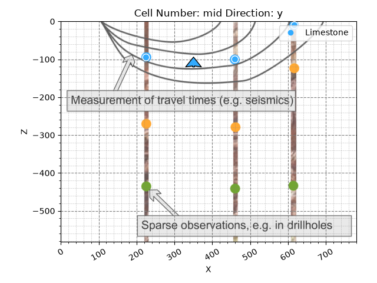
Computing the first version¶
That’s enough to compute a first version of the model:
geo_model.update_transform(gp.data.GlobalAnisotropy.NONE)
gp.compute_model(geo_model)
Setting Backend To: AvailableBackends.PYTORCH
GPU enabled. Using device: cuda
GPU device count: 1
Current GPU device: 0
gpv.plot_2d(geo_model, cell_number='mid')
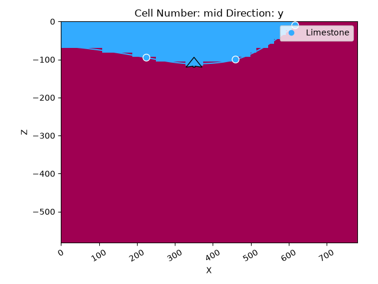
<gempy_viewer.modules.plot_2d.visualization_2d.Plot2D object at 0x7f3eea0904d0>
Overlaid on the original cross-section, the computed interface runs right through the three points, shaped by the one orientation:
p2d = gpv.plot_2d(geo_model, show=False)
p2d.axes[0].imshow(img, origin='upper', alpha=.8, extent=(0, 780, -582, 0))
p2d.axes[0].grid(which='both')
p2d.axes[0].minorticks_on()
p2d.axes[0].grid(which='major', linestyle='--', linewidth='0.8', color='gray')
p2d.axes[0].grid(which='minor', linestyle=':', linewidth='0.4', color='gray')
plt.show()
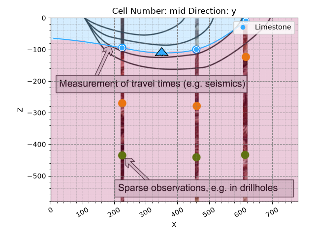
gpv.plot_3d(geo_model, show_surfaces=True)
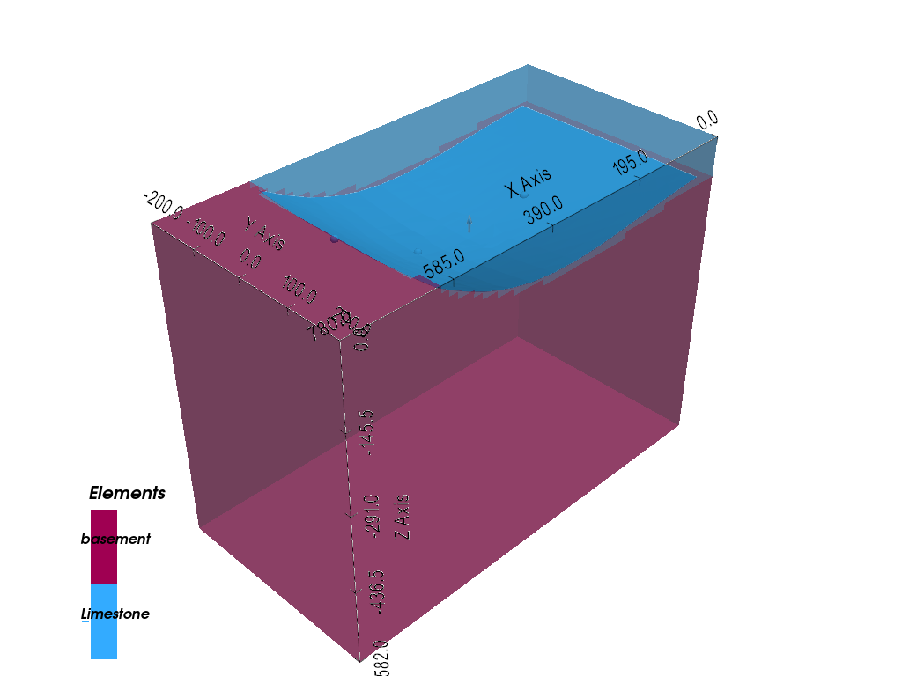
<gempy_viewer.modules.plot_3d.vista.GemPyToVista object at 0x7f3ecef62030>
One lithological interface down. The scalar field behind it – the continuous function whose isosurface is this interface – is worth a look before adding more data, to get a feel for how it responds as new units and points are added:
gpv.plot_2d(geo_model, series_n=0, show_data=True, show_scalar=True, show_lith=False)
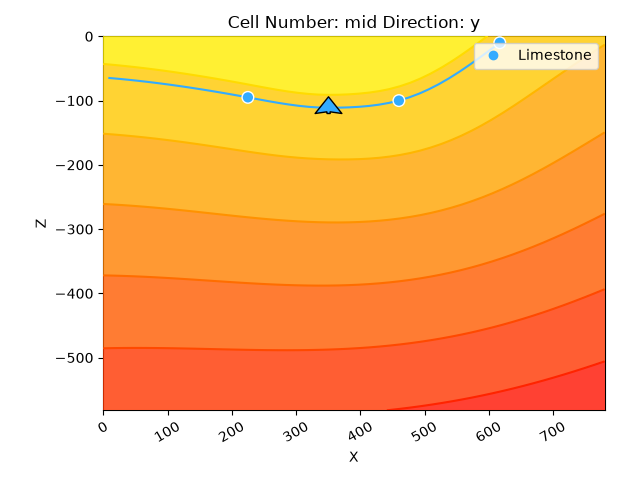
<gempy_viewer.modules.plot_2d.visualization_2d.Plot2D object at 0x7f3eea224150>
Adding a second lithological unit¶
A new unit needs a new StructuralElement – add_surface_points only adds
points to a unit that already exists (see the Basics tutorial for the class itself).
Let’s assume the next unit down is a siltstone, colored to match the cross-section,
and append it to the same group as the limestone:
element2 = gp.data.StructuralElement(
name='Siltstone',
color='#FFA833',
surface_points=gp.data.SurfacePointsTable.from_arrays(
x=np.array([460]),
y=np.array([0]),
z=np.array([-280]),
names='Siltstone'
),
orientations=gp.data.OrientationsTable.initialize_empty()
)
geo_model.structural_frame.structural_groups[0].append_element(element2)
gp.compute_model(geo_model)
p2d = gpv.plot_2d(geo_model, cell_number='mid', show=False)
p2d.axes[0].imshow(img, origin='upper', alpha=.8, extent=(0, 780, -582, 0))
p2d.axes[0].grid(which='both')
p2d.axes[0].minorticks_on()
p2d.axes[0].grid(which='major', linestyle='--', linewidth='0.8', color='gray')
p2d.axes[0].grid(which='minor', linestyle=':', linewidth='0.4', color='gray')
plt.show()
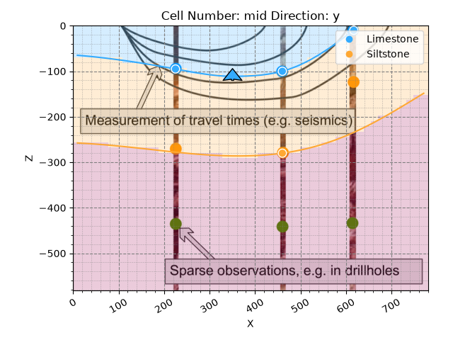
Setting Backend To: AvailableBackends.PYTORCH
GPU enabled. Using device: cuda
GPU device count: 1
Current GPU device: 0
With only one point so far, the siltstone’s bottom interface simply follows the limestone’s shape and orientation – a direct consequence of both sharing one scalar field. It already lines up reasonably well with the first borehole. Let’s add the missing point, plus a third unit while we’re at it:
gp.add_surface_points(geo_model=geo_model, x=[225], y=[0], z=[-270], elements_names=['Siltstone'])
element3 = gp.data.StructuralElement(
name='Sandstone',
color='#72A533',
surface_points=gp.data.SurfacePointsTable.from_arrays(
x=np.array([225, 460]),
y=np.array([0, 0]),
z=np.array([-436, -441]),
names='Sandstone'
),
orientations=gp.data.OrientationsTable.initialize_empty()
)
geo_model.structural_frame.structural_groups[0].append_element(element3)
gp.compute_model(geo_model)
p2d = gpv.plot_2d(geo_model, show=False)
p2d.axes[0].imshow(img, origin='upper', alpha=.8, extent=(0, 780, -582, 0))
p2d.axes[0].grid(which='both')
p2d.axes[0].minorticks_on()
p2d.axes[0].grid(which='major', linestyle='--', linewidth='0.8', color='gray')
p2d.axes[0].grid(which='minor', linestyle=':', linewidth='0.4', color='gray')
plt.show()
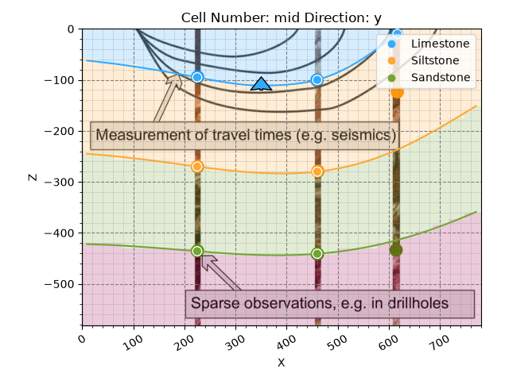
Setting Backend To: AvailableBackends.PYTORCH
GPU enabled. Using device: cuda
GPU device count: 1
Current GPU device: 0
gpv.plot_3d(geo_model, show_surfaces=True)
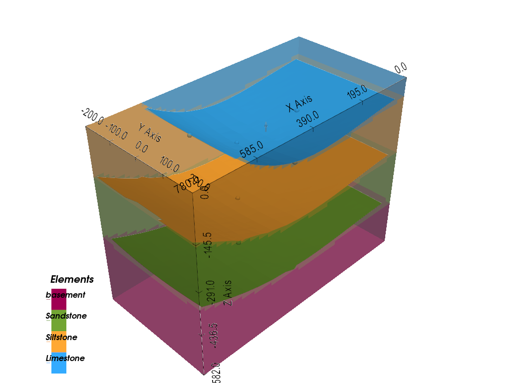
<gempy_viewer.modules.plot_3d.vista.GemPyToVista object at 0x7f3f0185d9d0>
Discontinuities: combining scalar fields¶
All three units so far share one scalar field, which only ever produces smoothly conformable layers. Real geology is rarely that tidy. gempy handles this by letting separate structural groups – each with its own scalar field – interact with each other, which is exactly what’s needed for the sparse, ambiguous data on the right side of the cross-section.
Let’s define one more element there to explore this:
element_discont = gp.data.StructuralElement(
name='Discont_Surface',
color='#990000',
surface_points=gp.data.SurfacePointsTable.from_arrays(
x=np.array([550, 650]),
y=np.array([0, 0]),
z=np.array([-30, -200]),
names='Discont_Surface'
),
orientations=gp.data.OrientationsTable.from_arrays(
x=np.array([600]),
y=np.array([0]),
z=np.array([-100]),
G_x=np.array([.3]),
G_y=np.array([0]),
G_z=np.array([.3]),
names='Discont_Surface'
)
)
Placing it in its own group, inserted above the existing one, keeps it in a separate scalar field entirely:
group_discont = gp.data.StructuralGroup(
name='Discontinuity',
elements=[element_discont],
structural_relation=gp.data.StackRelationType.ERODE,
)
geo_model.structural_frame.insert_group(0, group_discont)
geo_model.structural_frame
Two groups, two independent scalar fields – computing the model now lets us look at each on its own:
Setting Backend To: AvailableBackends.PYTORCH
GPU enabled. Using device: cuda
GPU device count: 1
Current GPU device: 0
gpv.plot_2d(geo_model, series_n=1, show_data=True, show_scalar=True, show_lith=False)
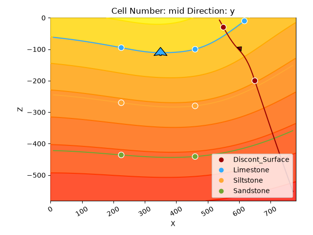
<gempy_viewer.modules.plot_2d.visualization_2d.Plot2D object at 0x7f3eec8ee1d0>
gpv.plot_2d(geo_model, series_n=0, show_data=True, show_scalar=True, show_lith=False)
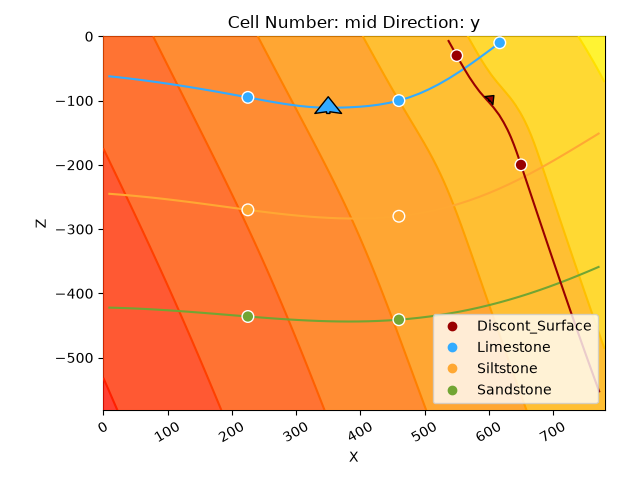
<gempy_viewer.modules.plot_2d.visualization_2d.Plot2D object at 0x7f3eea179950>
How two structural groups combine depends on (1) their order and (2) the younger
group’s StackRelationType – how it relates to everything below it:
ERODE: an erosive contact/unconformity, cutting into everything olderONLAP: the younger group onlaps onto the older one instead of cutting itFAULT: the younger group is a fault, offsetting everything olderBASEMENT: treats everything older as a single basement unit
The new group defaults to ERODE – let’s see what each of the other relevant
options actually looks like against this same data.
Erosive contact¶
Nothing needs to change for this one; it’s already the default:
p2d = gpv.plot_2d(geo_model, show=False)
p2d.axes[0].imshow(img, origin='upper', alpha=.8, extent=(0, 780, -582, 0))
p2d.axes[0].grid(which='both')
p2d.axes[0].minorticks_on()
p2d.axes[0].grid(which='major', linestyle='--', linewidth='0.8', color='gray')
p2d.axes[0].grid(which='minor', linestyle=':', linewidth='0.4', color='gray')
plt.show()
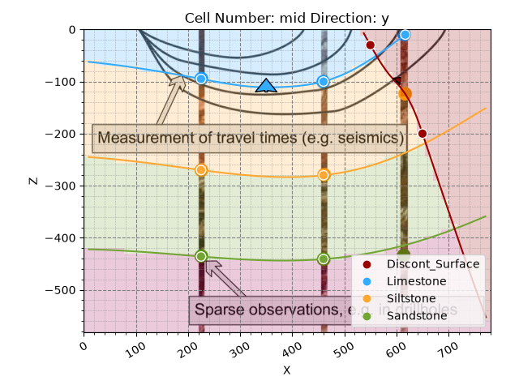
gpv.plot_3d(geo_model, show_surfaces=True, show_lith=False)
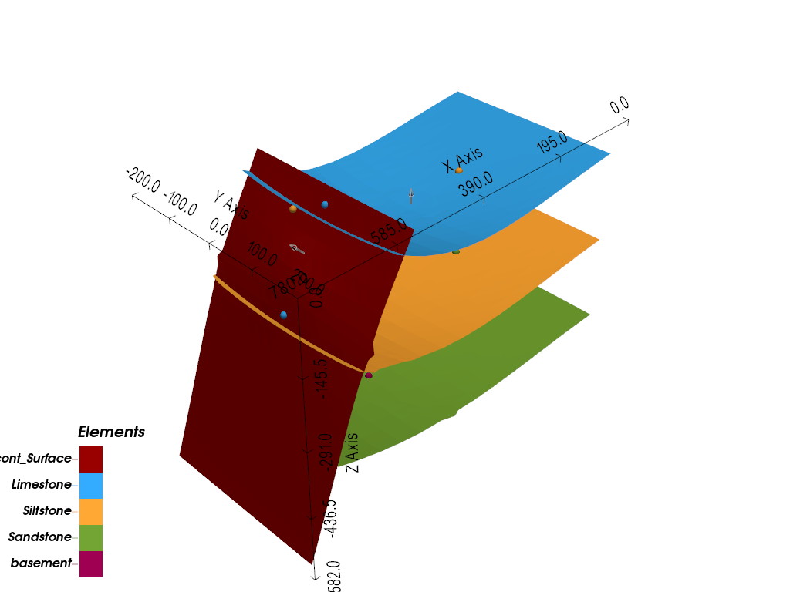
<gempy_viewer.modules.plot_3d.vista.GemPyToVista object at 0x7f3eec828d50>
Every older unit stops dead at the discontinuity – but that doesn’t fit the third borehole’s own point at all. Worth trying another relation type.
Onlap¶
%%
geo_model.structural_frame.structural_groups[0].structural_relation = gp.data.StackRelationType.ONLAP
gp.compute_model(geo_model)
p2d = gpv.plot_2d(geo_model, show=False)
p2d.axes[0].imshow(img, origin='upper', alpha=.8, extent=(0, 780, -582, 0))
p2d.axes[0].grid(which='both')
p2d.axes[0].minorticks_on()
p2d.axes[0].grid(which='major', linestyle='--', linewidth='0.8', color='gray')
p2d.axes[0].grid(which='minor', linestyle=':', linewidth='0.4', color='gray')
plt.show()
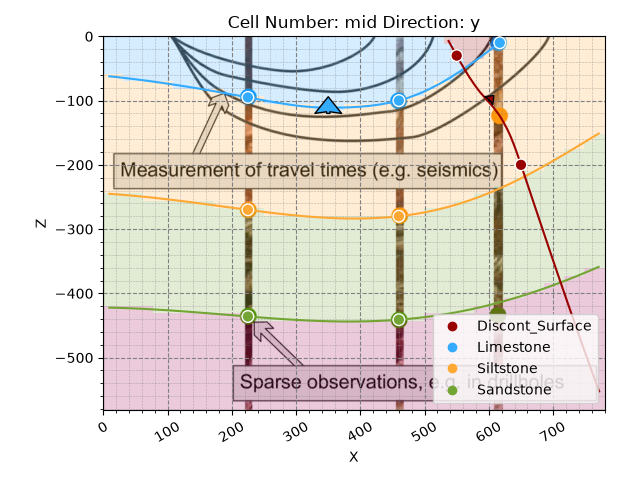
Setting Backend To: AvailableBackends.PYTORCH
GPU enabled. Using device: cuda
GPU device count: 1
Current GPU device: 0
gpv.plot_3d(geo_model, show_surfaces=True, show_lith=False)
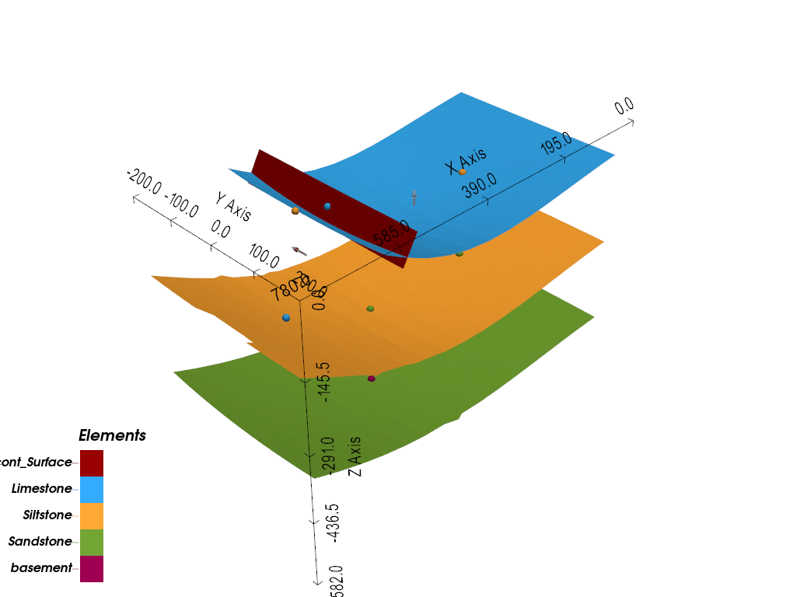
<gempy_viewer.modules.plot_3d.vista.GemPyToVista object at 0x7f3eec828d50>
Now the discontinuity’s own unit onlaps onto the uppermost surface below and stops there – plausible, but still not a great match for the data. One relation type left.
Fault¶
A fault additionally needs set_is_fault, exactly as in the Basics tutorial:
geo_model.structural_frame.structural_groups[0].structural_relation = gp.data.StackRelationType.FAULT
gp.set_is_fault(geo_model, ["Discontinuity"])
gp.compute_model(geo_model)
p2d = gpv.plot_2d(geo_model, show=False)
p2d.axes[0].imshow(img, origin='upper', alpha=.8, extent=(0, 780, -582, 0))
p2d.axes[0].grid(which='both')
p2d.axes[0].minorticks_on()
p2d.axes[0].grid(which='major', linestyle='--', linewidth='0.8', color='gray')
p2d.axes[0].grid(which='minor', linestyle=':', linewidth='0.4', color='gray')
plt.show()
Setting Backend To: AvailableBackends.PYTORCH
GPU enabled. Using device: cuda
GPU device count: 1
Current GPU device: 0
gpv.plot_3d(geo_model, show_surfaces=True, show_lith=False)
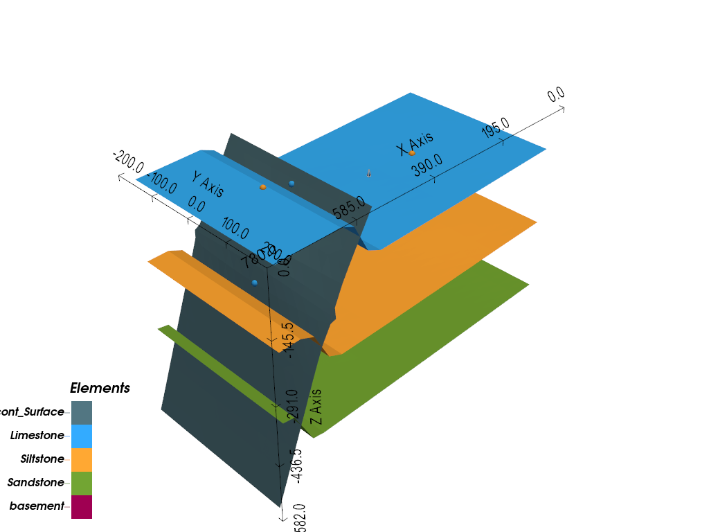
<gempy_viewer.modules.plot_3d.vista.GemPyToVista object at 0x7f3eec878410>
This one fits: instead of a large syncline bending the whole deposit series upward, a reverse fault offsets otherwise near-horizontal layers, explaining the shallower limestone in the third borehole. The degree of offset follows directly from the surface points on each side of the fault – with no data at all on one side, gempy assumes a very large offset.
The deposit series’ scalar field itself now visibly reflects the fault’s offset:
gpv.plot_2d(geo_model, series_n=1, show_data=True, show_scalar=True, show_lith=False)
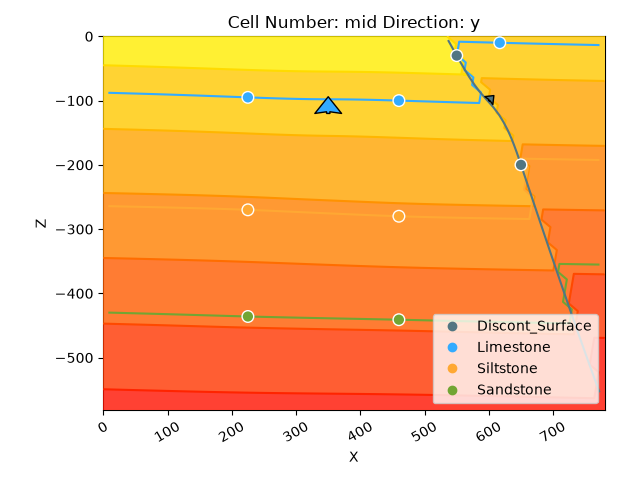
<gempy_viewer.modules.plot_2d.visualization_2d.Plot2D object at 0x7f3eea2e2350>
Topography and geological maps¶
One more grid type worth adding here: topography. It lets a model’s surfaces be
intersected with real terrain, and, computed together with the model, generates a
geological map of whatever crops out at the surface. A synthetic topography stands
in for real data below (real rasters are supported too, via
set_topography_from_file):
gp.set_topography_from_random(
grid=geo_model.grid,
fractal_dimension=1.9,
d_z=np.array([-150, 0]),
topography_resolution=np.array([200, 200])
)
gpv.plot_2d(geo_model, show_topography=True)
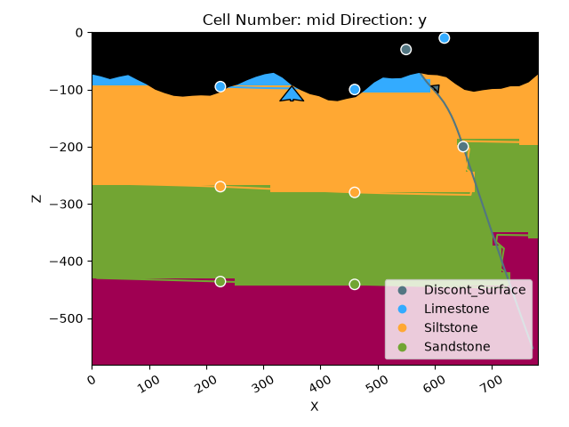
Active grids: GridTypes.DENSE|TOPOGRAPHY|NONE
<gempy_viewer.modules.plot_2d.visualization_2d.Plot2D object at 0x7f3e4590b3d0>
gpv.plot_3d(geo_model, show_surfaces=True, show_topography=True, show_lith=False)
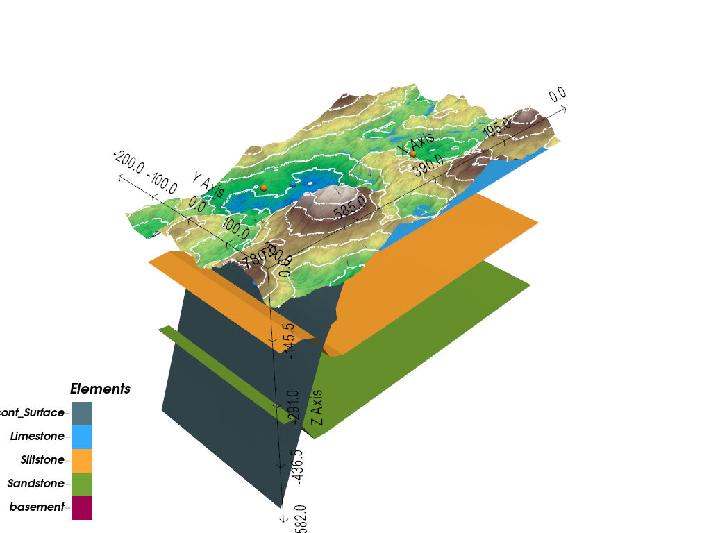
<gempy_viewer.modules.plot_3d.vista.GemPyToVista object at 0x7f3e5416ac60>
Recomputing now intersects the topography with the model, so the units outcropping
at the surface can be read directly as a geological map – a top-down view via
section_names=['topography']:
gp.compute_model(geo_model)
gpv.plot_2d(geo_model, section_names=['topography'], show_topography=True, show_boundaries=False)
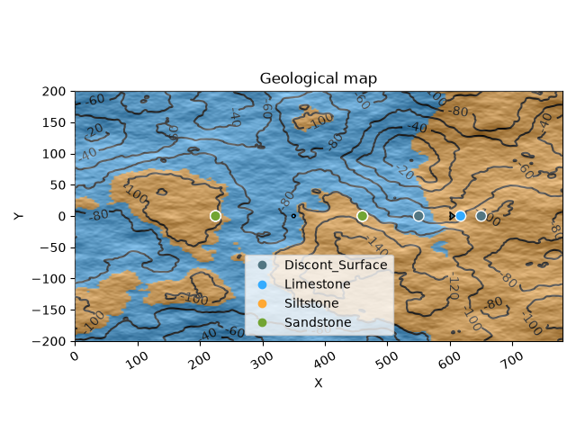
Setting Backend To: AvailableBackends.PYTORCH
GPU enabled. Using device: cuda
GPU device count: 1
Current GPU device: 0
<gempy_viewer.modules.plot_2d.visualization_2d.Plot2D object at 0x7f3e5474bad0>
gpv.plot_3d(geo_model, show_surfaces=True, show_topography=True)
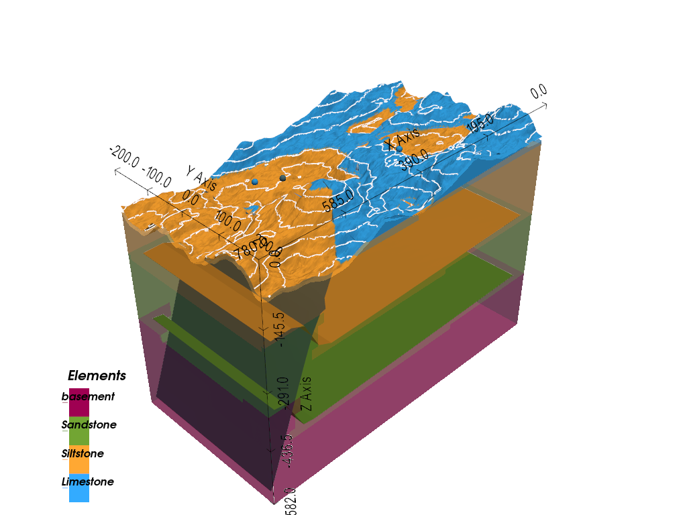
<gempy_viewer.modules.plot_3d.vista.GemPyToVista object at 0x7f3eec8f1710>
From three borehole readings and a hand-drawn cross-section, this is now a complete 3D model, complete with a fault, a geological map, and a surface topography – built up one decision at a time rather than handed over in a CSV file.
# sphinx_gallery_thumbnail_number = 19
Total running time of the script: (0 minutes 19.392 seconds)